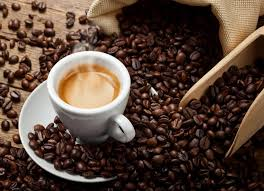

Discover Your Perfect Brew
Every method is a mood. Every brew, a journey."
In every swirl of steam and scent, a story begins. Brewing coffee isn't just a method — it's a quiet ritual, a gentle alchemy where water meets bean and time bends to taste. Whether bold as sunrise or smooth as a whispered song, each brew holds a moment crafted by your hands.
This is where the magic starts — one pour, one sip, one soul-stirring cup at a time.

French Press
Bold, rich, and full-bodied with a velvety texture

Pour Over
Clean, bright, and delicate with complex flavor notes

Espresso
Intense, concentrated, with a beautiful crema layer

Cold Brew
Smooth, sweet, with low acidity and chocolate notes